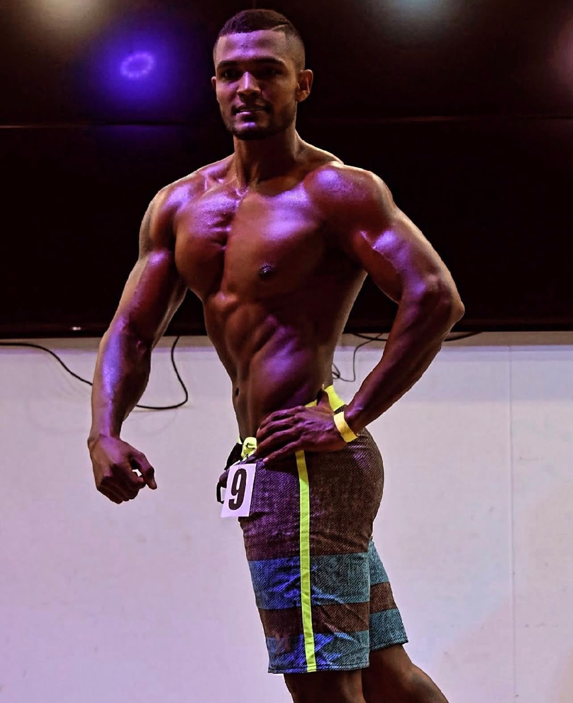
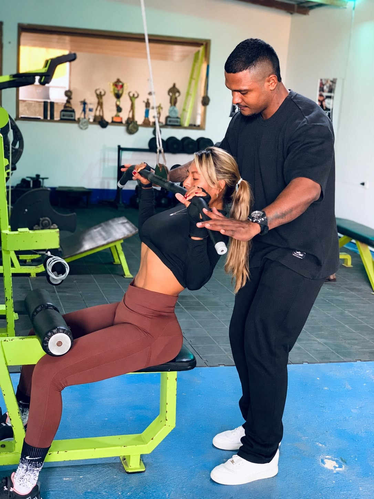

Fitness Club
Instructor personalOrientación, acompañamiento y supervisión de usuarios en sus rutinas de entrenamiento físico, apoyando sus objetivos y el mejoramiento de sus capacidades físicas.
Necoclí, Antioquia
Instructor en deportes, entrenamiento físico y recreación. Entrenador personal con trayectoria en el gimnasio y en la tarima.
Conoce mi experiencia ↗
DISCIPLINA EN CADA ETAPA.Formación técnica en entrenamiento físico, complementada con estudios en nutrición deportiva, programación de la fuerza y bioseguridad.
Programa de 1.200 horas.
Taller enfocado en las diferentes edades del ciclo vital · 6 horas.
Curso de formación complementaria · 80 horas.
Formación complementaria · 48 horas.
Profundización en tecnología e informática.
Orientación, acompañamiento y supervisión de usuarios en sus rutinas de entrenamiento físico, apoyando sus objetivos y el mejoramiento de sus capacidades físicas.
Necoclí, Antioquia
Experiencia como instructor personal en gimnasio, desarrollando las funciones propias del cargo.
Necoclí, Antioquia
Participación en el proyecto «Por su salud, muévase en casa», una iniciativa de actividad física y hábitos saludables durante la emergencia sanitaria.
Necoclí, Antioquia

La experiencia en gimnasios y el trabajo independiente forman parte de un recorrido centrado en acompañar la actividad física.
Un perfil que reúne preparación académica, práctica como instructor y participación en escenarios de fisicoculturismo.
Contactar a Yeison ↗Momentos de participación en competencias de fisicoculturismo. Selecciona una fotografía para ampliarla.
Conoce las opciones y consulta los detalles de cada programa por WhatsApp.
Yeison Barragán Cavadia
Medellín, Colombia
Escanea el código para consultar mi formación, experiencia y trayectoria.
Descargar QR ↓